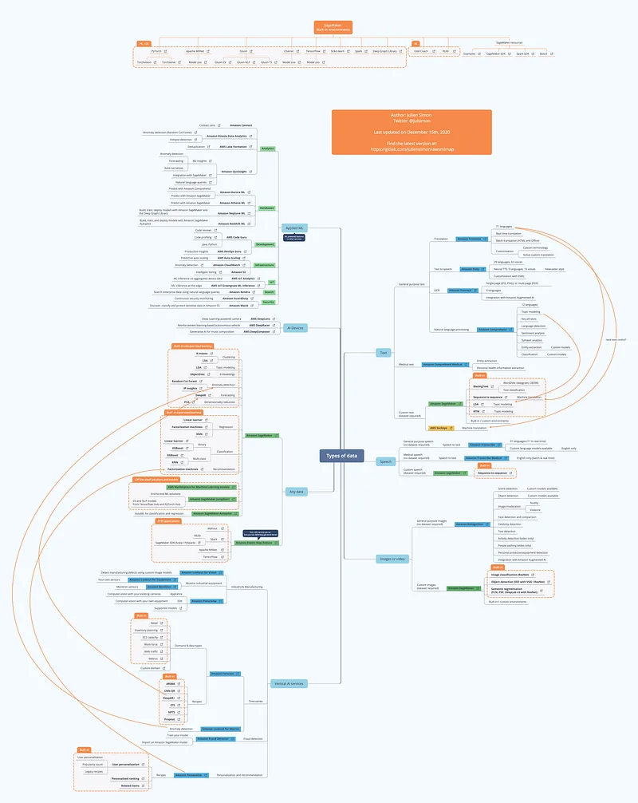
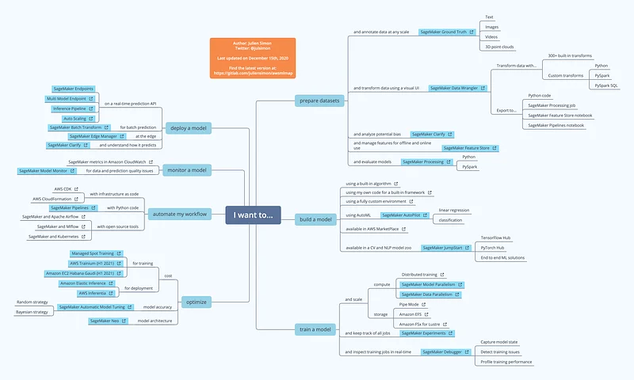
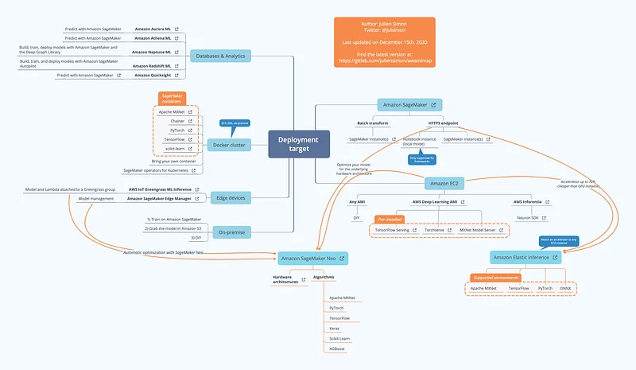

A map for Machine Learning on AWS (December 2020 edition)
It’s that time of the year again! AWS re:Invent 2020 is over, and as it brought us quite a few new services and features, it was time for me to update my map thoroughly.
As before, you’ll find the latest XMind and high-resolution PNG versions on Gitlab: https://github.com/juliensimon/awsmlmap.
Enjoy, and please let me know if I forgot anything.



Madly in love with Visigoth. 1980 all over again. Buy, buy, buy.